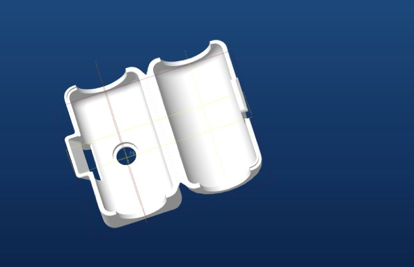
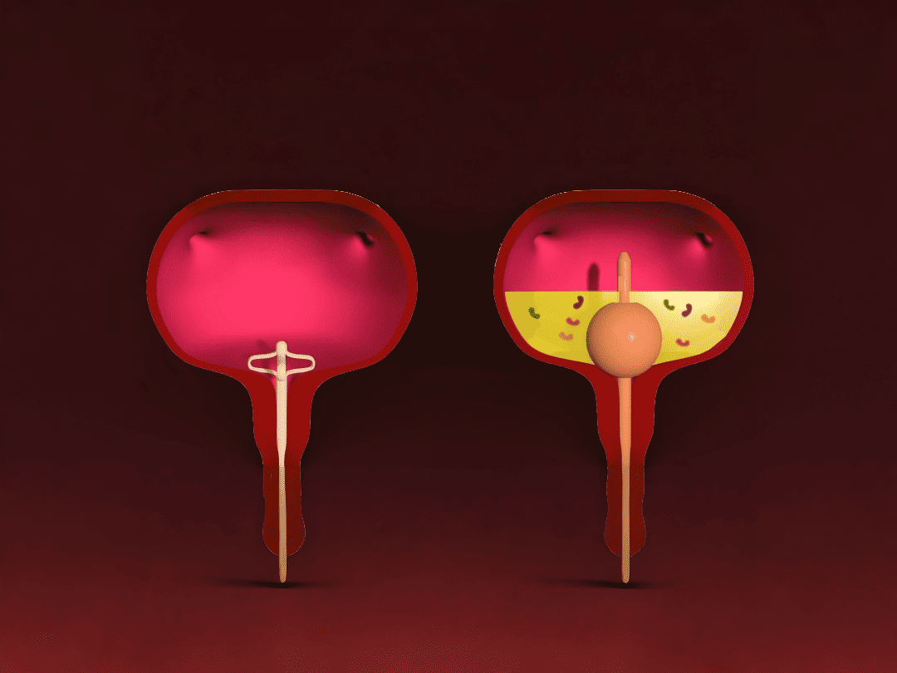

The Lotus Catheter replaces the Foley’s inflatable balloon with a 2–3 wing flower configuration made of compressible, collapsible rubber polymer — available in Silicone, TPU, PVC, and Latex. The wings are a backup retention mechanism, not the primary one: the catheter is stabilized by firm adherence to the patient’s thigh using a Lotus Stabilizer or cross adhesive tape, positioning the wings 2–5 cm above the bladder neck and trigone.

On May 21, 2020, the FDA cleared the Lotus Catheter for use as a Foley catheter, a Malecot catheter, and a straight catheter — the only urinary catheter with FDA approval for all three indications in a single device.

Every Lotus Catheter shares the same balloon-free wing mechanism. Specialty configurations adapt it for irrigation, urethral stricture, prostatic anatomy, and nephrostomy access.
One channel irrigates the bladder with Glycine isotonic solution after prostate or bladder surgery; the second channel drains.
A side channel opens at the very tip for guide-wire threading after endoscopic dilation, positioning the wings 2.5–5.0 cm above the trigone.
A 25–30° angled tip navigates past an enlarged median lobe that a straight tip can’t negotiate.
A two-wing configuration steerable away from the stent under fluoroscopy, avoiding accidental dislodgement during placement or exchange.
The original “Collapsible Catheter” patent, filed by Dr. Said Hakki.
The design still used today was developed, replacing the balloon retention concept entirely.
Formal patent protection for the No Balloon Catheter design.
Initial FDA clearance for the Lotus Catheter in Latex.
Professor Jorge Lockhart’s 50-patient prospective trial at USF, published February 27, 2017, with zero CAUTI cases.
Cleared for use as a Foley, Malecot, and straight catheter — patent protected through November 19, 2045.
FDA-cleared May 21, 2020 for use as a Foley catheter, a Malecot catheter, and a straight catheter — the only urinary catheter with FDA approval for all three indications in a single device.
Yes. It is the only FDA-approved indwelling urinary catheter that can be used by the patient at home, connected to a bedside urine bag or a urine leg bag.
Yes, using the Specialty Two-Wing Nephrostomy Lotus Catheter. The wings can be steered away from the JJ stent under fluoroscopy to avoid accidental dislodgement.
The wing configuration is made of compressible, collapsible rubber polymer available in Silicone, TPU, PVC, and Latex.
Up to 30 days. If mechanical resistance is encountered during removal, the catheter shaft and activation rod can be cut to collapse the wings and free the device.
Whether you want to assess Lotus for clinical use or look into distribution, the data and support to get moving fast are ready.